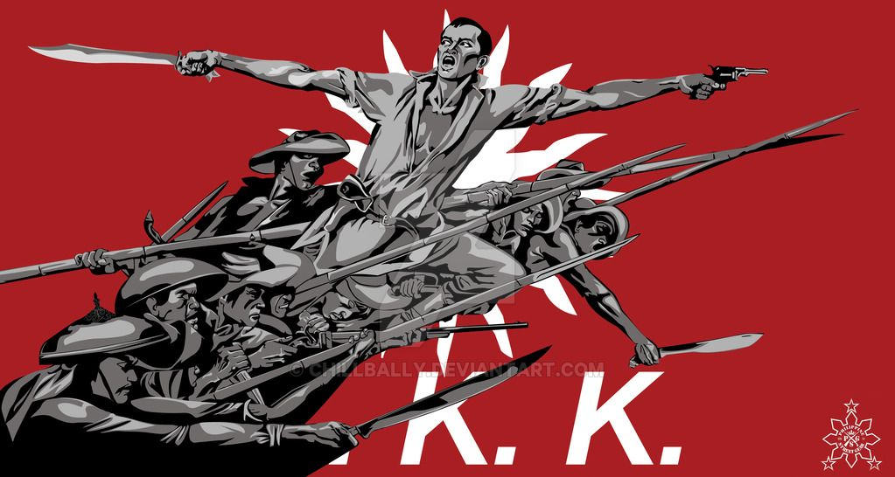
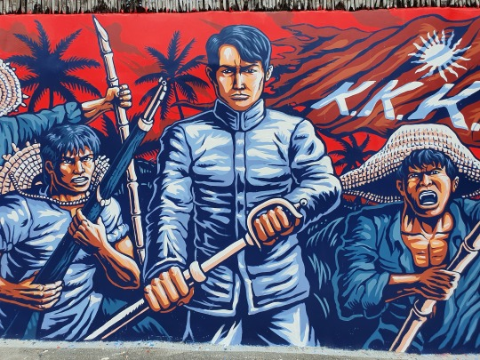
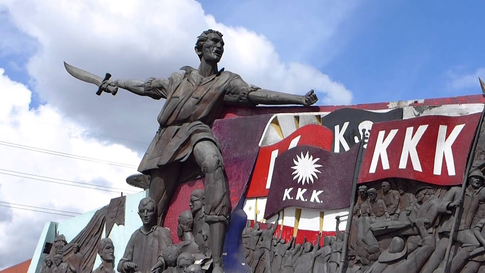

Historical Context

The first move towards independence began on July 7, 1892 when the Katipunan was established by
Andres Bonifacio. This was a result of the failure of the Reform Movement in Spain in which Filipinos
attempted to demands reforms for the Philippines from the Spanish government. Bonfacio saw the futility of
the efforts of the Filipino propagandist and organized an underground movement against Spain. The
Kataastaasang Kagalang-kalangan Katipunan ng mga Anak ng Bayan or KKK was a revolutionary society
that espoused independence and freedom for the Philippines through force of arms. Its main objective was
separation of the Philippines from Spain and, at the same time, the development of the Filipinos as citizen of
their own nation once independence was achieved. The latter was done through the written works by
Bonifacio and fellow Katipunero, Emilio Jacinto, who wrote a number of poems and essays for the society
members.
The recruitment process of the Katipunan followed the Masonic initiation rites while its structure
was said to be based on Rizal’s aborted reformist organization, the La Liga Filipina. The new members of
the society were indoctrinated with the Katipunan rules and its teachings that emphasized the value of the
love of one’s country and fellow Filipinos.
About the Author

Emilio Jacinto was born on December 15, 1875 in the district of Trozo in Tondo, Manila. He was the
son of Mariano Jacinto, a bookkeeper, and Josefa Dizon. Living a life of poverty, Jacinto still managed to
get a good education. He finished his elementary education in a private school then took up his secondary
education at the Colegio de San Juan de Letran. He later studied law at the University of Santo Tomas where
he developed a love of reading and improved his skills in Spanish. Unfortunately, he had to stop his studies
when the Philippine Revolution began in 1896.
Jacinto joined the Katipunan in 1894 at the age of 18 and took the symbolic name Pingkian. It was
during this time that he developed his nationalistic ideals through his enthusiasm and ideas, Jacinto became
a guiding light to the members of the society. He wrote the Kartilya as well as the oath of the Katipuneros.
He also edited the Katipunan newspaper, Kalayaan, and was the author of several literary writings using the
pen-name “Dimas Ilaw.” He served the Katipunan in different capacities such as secretary, fiscal, editor, and
later was appointed General by Bonifacio in 1897. He also served as an adviser to the Supremo.
After the death of Bonifacio in Cavite in 1897, Jacinto continued the fight against the Spaniards even
after the truce following the Pact of Biak-na-Bato. He was wounded in a battle against the Spaniards in
Magdelena, Laguna and was captured. Upon investigation, Jacinto was released after he managed to
convince the Spanish soldiers he was a spy in their service when he showed them a military pass issued to a
man, he killed several months ago. Jacinto quickly went into hiding in Manila. There he sent Jacinto had to
go back to Laguna to lead his fellow patriots in the war against the new enemy, the Americans. He
established his headquarters in the town of Majayjay where he, unfortunately, contracted malaria. He died
on April 6, 1899.
The Kartilya ng Katipunan

In his study of the Katipunan history and its documents, Jim Richardson said that “the Kartilya is the
best known of all Katipunan texts” and that it is “the only document of any length set in print by the
Katipunan prior to August 1896 that is known to be still extant.” The Kartilya was printed as a small
pamphlet that was distributed to the members of the Katipunan. Its term was derived from the Spanish
cartilla which was the primer used for grade schools during Spanish period. And like the cartillas, this
document served as the primary lessons for the members of the Katipunan.
The Kartilya presents not only the teachings for the neophyte Katipunero but also the guiding
principles of the society. These teachings are expected from the members even after the attainment of
freedom from the colonizers. The Kartilya ends with a document of affirmation by the member to the
society’s teachings.
The Kartilya was not just a document for the Katipunan. Its importance today is predicated on the
teachings that embodied the moral and nationalistic principle of a nation that fought for independence.
These principles are relevant as the sense of nationhood still holds true when the cultural and historical
values of every Filipino are threatened by the onslaught of foreign influences brought about by today’s
globalization.
The teachings of the
Katipunan of the
Sons of the People
ASSOCIATION OF THE SONS OF THE PEOPLE
To those who want to join this association
In order that all who want to enter this association may have a full understanding and
knowledge of its guiding principles and main teachings, it is necessary to make these things known to them
so that they will not, tomorrow or the next day, repent, and so that they may perform their duties
wholeheartedly.
This Association pursues a most worthy and momentous object: to unite the hearts and minds of all
the Tagalogs by means of an inviolable oath, in order that this union may be strong enough to tear aside the
thick veil that obscures thought, and to find the true path of Reason and Enlightenment.
One of the foremost rules here is true love of the native land and genuine compassion for one
another.
Poor, rich, ignorant, wise-here, all are equal and true brethren.
As soon as anybody enters here, he shall perforce renounce disorderly habits and shall submit to the
authority of the sacred commands of the Katipunan.
All acts contrary to noble and clean living are repugnant here, and hence the life of anyone who
want to affiliate with this Association will be submitted to a searching investigation.
If the applicant merely wishes to know the secrets of the Association, or to seek personal
gratification, or to know who are here in order to sell them for handful of silver, he cannot proceed, for here
the many who are watching him will already know his intentions, and will immediately have recourse to an
effective remedy, such as befits traitors.
Here, only actions are demanded and esteemed; hence anybody who is not willing to act should not
enter, no matter how good a speaker he might be.
It is also announced that the duties to be performed by the members of this Association are
exceeding hard, especially if one member that there can be no dereliction or willful evasion of duty without
the exaction of a terrible punishment.
If an applicant merely desires financial support relief or wants to lead a life of bodily comfort and
ease, he had better not proceed, for he will encounter weighty task, like the protection of the oppressed and
the relentless fight against all that is evil. In this way, his fate will be vexatious life.
Nobody is unaware of the misfortune that threatens the Filipinos who contemplate these things that
are sacred (and even those that are not) and the suffering they are made to endure by the reign of cruelty,
injustice and evil.
Everybody also knows the need for money, which today, is one of the main things upon which we
depend to bring sustenance to all. In this regard, the punctual payment of dues is required: one peso upon
entry and then twelve and a half centavos each month. The custodian of the funds will periodically render an
account to the members, and each member has a right to examine the accounts, should he so wish. The
funds cannot be expended without the consent of the majority.
All this must be thought over and deliberated upon calmly, as it cannot be accomplished or endured
by anyone who has no love for his native land and no genuine desire to promote Progress.
TEACHING OF THE KATIPUNAN OF THE SONS OF THE PEOPLE
A life that is not dedicated to a great and sacred cause is like a tree without a shade, or a poisonous
weed.
A good deed lacks virtue if it springs from a desire for personal profit and not from a sincere desire
to do good.
True charity resides in acts of compassion, in love for one’s fellow men, and in making true Reason
the measure of every move, deed and word.
Be their skin dark or pale, all men are equal. One can be superior to another in knowledge, wealth
and beauty… but not in being.
A person with a noble character values honor above self-interest, while a person with an ignoble
character values self-interest above honor.
An honorable man’s word is his bond.
Don’t waste time; lost wealth may be recovered, but time lost is lost forever.
Defend the oppressed and fight the oppressor.
An intelligent man is he who takes care in everything he says and keeps quiet about what must be
kept secret.
Along the thorny path of life, the man leads the way and his wife and children follow. If the leader
goes the way of perdition, then so do those are led.
Do not regard a woman as a mere plaything, but as a helpmate and partner in the hardships of this
existence. Have due regard to her weakness, and remember the mother who brought you into this world and
nurtured you in your infancy.
What you would not done to your wife, daughter and sister, do not do to the wife, daughter and sister
of another.
A man’s worth does not come from him being a king, or in the height of his nose and the whiteness of
his face, or in him being a priest, a representative of God, or in his exalted position on the face of this earth.
Pure and truly noble is he who, though born in the forest and able to speak only his own tongue, behaves
decently, is true to his word, has dignity and honor, who is not an oppressor and does not abet oppressors,
who knows how to cherish and look after the land of his birth.
When these doctrines have spread and the brilliant sun of beloved liberty shines on these poor
Islands, and sheds its sweet light upon a united race, a people in everlasting happiness, then the lives lost,
the struggle and the suffering will have been more than recompensed.
Relevance
The current relevance of the Kartilya lies in the fact that it established not only the rules for
the members of the organization but the principles for the citizens of a nation once independence had
been achieved. Though written in the 19 th century, the Kartilya is significant to the lives of modern
Filipinos as it reads like a simple creed for living in the light of the many changes occurring at
present.